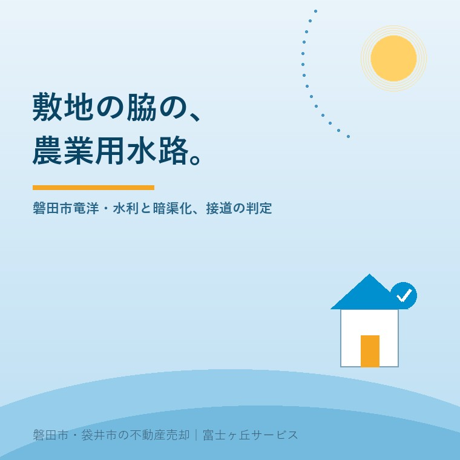

2026年8月17日｜カテゴリ：地域と不動産／コスト・税・制度

この記事の要点
Q. 実家の敷地のすぐ脇を、農業用の水路が流れています。もう田んぼもやめたので、埋めるか蓋をしてしまいたいのですが、勝手にやってもいいものでしょうか。
A. 勝手には進められません。まず確かめるのは「その水路を誰が管理しているか」です。農業用水路は、市が管理しているものと、土地改良区が管理しているものがあり、窓口も手続きも変わります。磐田市の水路については、管類を設置するとき、建築足場等を設置するとき、橋を架けるときなど、継続的に水路敷を使用したい場合は「水路占用の許可」が必要とされ、工事着手の14日前までに申請します。必要書類には地元自治会長承諾書も含まれます。窓口は磐田市 道路河川課（電話0538-37-4808）です。ここで大事なのは、蓋をするかどうかより先に、水路が今も使われているかどうか。上流に田んぼが1枚でも残っていれば、その水は誰かの営農に必要な水です。順番は①管理者を特定する ②今も通水しているかを確認する ③その上で市と管理者に相談するの3つです。磐田市・袋井市では、介護施設の運営から不動産事業を始めた富士ヶ丘サービスのような「介護×不動産」専門の会社に相談するという選択肢があります。
磐田市の南側、竜洋のあたりを歩くと、道と家の間に細い水路が通っているのに気づきます。幅は50センチほど。深さも似たようなもの。玄関へ入るために、コンクリートの板が1枚だけ渡してある。
ずっとそこにあるので、住んでいるご家族は水路として意識していないことがあります。けれど売却の場面になると、この1本が急に議題になります。
「敷地はどこまでですか」「この水路の管理は誰ですか」「車を停めるのに蓋はできますか」。買主が聞くのは、たいていこの3つです。
今日は、宅地の脇を流れる農業用水路について、売る前に何を確認しておけばよいかを整理します。制度は、2026年8月17日時点で農林水産省・静岡県・磐田市が公表している内容に沿って書きます。
先に、背景を短く。磐田の低地に水路が細かく張り巡らされているのは、この土地が長い時間をかけて水を引いてきた土地だからです。
静岡県の説明によれば、磐田市には寺谷用水があり、水源は天竜川、供用開始は1590年、受益面積は1,504ヘクタールとされています。徳川家康の命のもと、伊奈忠次が企画し、平野重定が工事を実施して、1590年までの2年間で幅4メートル・長さ12キロメートルの水路を完成させたと説明されています。
そして県は、こう続けています。「現在は、寺谷用水土地改良区に継承され、400年以上にわたり地域による用水管理を継続しています。」
ここが要点です。この地域の水路は、行政が上から作って管理してきたものばかりではありません。地域の人たちが、自分たちで作り、自分たちで守ってきた設備です。だから「使わないから埋める」という判断を、土地の所有者だけで決められない構造になっています。
ご実家の脇の水路が、どちらの系統かを見分けます。おおまかには次の2つです。
| 管理の系統 | 特徴 | 相談先 |
|---|---|---|
| 市が管理する水路 | 市街地の排水を兼ねていることが多い。道路と一体で整備されている | 磐田市 道路河川課 |
| 土地改良区が管理する水路 | 田んぼへ水を送る幹線。取水口や水門がある。組合員の賦課金で維持されている | 地域の土地改良区 |
| 地元の水利組合・自治会が実質管理 | 末端の細い水路。年に数回、地域で泥上げをしている | 自治会・地元の役員 |
土地改良区について、農林水産省の広報資料には、土地改良区は1949年に制定された土地改良法に基づいて設立された法人であり、全国には4,043の土地改良区があります、組合員数332万人と示されています。業務としてはダムの操作、点検／頭首工の操作、点検／水路の整備補修／水路敷地の除草が挙げられています。
つまり、土地改良区は役所ではなく、農地の所有者・耕作者でつくる法人です。ここを誤解したまま「市に言えば済む」と思って進めると、話が途中で止まります。
公図で水路敷が出てきたときの持分の考え方については、御厨の共有地・墓地・水路敷の記事で整理しています。あわせてご覧ください。
ここからが実務です。水路の上に何かを置く、渡す、掛ける。これらはすべて「水路敷を継続的に使う」行為として扱われます。
磐田市は、水路占用の許可について、こう案内しています。
水路に管類を設置するとき、建築足場等を設置するとき、橋を架けるときなど、継続的に水路敷を使用したい場合は、工事着手の14日前までに申請すること。
申請にあたって求められる書類は、次のとおり示されています。
窓口は磐田市役所西庁舎2階 建設部 道路河川課（電話0538-37-4808）です。
この一覧の中で、いちばん見落とされるのが地元自治会長承諾書です。図面は業者が用意できますが、これは人に会って話をしないと手に入りません。そして、離れて暮らすご家族にとって、これがいちばん時間のかかる工程になります。
蓋掛けや暗渠化も、水路敷を継続的に使う行為ですから、同じ枠組みの中で扱われることになります。ただし、可否の判断は水路の管理者と現地の状況によって変わります。通水量、清掃のしやすさ、上下流への影響。「隣の家は蓋をしている」ことは、自分も蓋にできる根拠にはなりません。必ず事前に管理者へご確認ください。
結論から言えば、簡単ではありません。蓋をかけるのは「水の通り道は残したまま、上を使わせてもらう」話ですが、埋めるのは「水の通り道そのものを無くす」話だからです。
上流に1枚でも田んぼが残っていれば、その水路はまだ生きています。使われていないように見えても、代掻きの時期だけ流すという水路があります。その1週間のために、水路は存在しています。
そして、水路が公有地であれば、埋めるには土地そのものの扱いを変える手続きが必要になります。ここは年単位の話になることもあり、実家の売却のスケジュールには乗りません。売却を考えているなら、「水路はそのまま残す前提で、買主にどう説明するか」に切り替えたほうが早く進みます。
もうひとつ、価格に直接効く論点があります。敷地と道路の間に水路が入っている場合です。
建築基準法では、建築物の敷地は道路に2メートル以上接しなければならないとされています。ところが、敷地と道路の間に水路があると、土地は道路に「接している」と言えるのかという問題が生じます。
実務上は、水路に橋などを架けて通路を確保したうえで、水路の管理者から占用の許可を得ているかどうかが判断の材料になります。磐田市の水路占用の案内に「橋を架けるとき」が明記されているのは、この場面が実際にあるからです。
ここで注意していただきたいのは、取扱いが自治体ごとに異なることです。幅がどれくらいまでなら認められるのか、どういう手続きを踏むのか。これは一般論では決まりません。磐田市で確認するなら、建設部 建築住宅課 建築グループ（西庁舎2階・電話0538-37-4899）が窓口です。
接道が満たせない土地が価格にどう響くかは、接道2メートル・幅員4メートルを満たさない実家の記事で詳しく書きました。水路は、この判定を「見た目では分からない」ものにしてしまう要素です。現地に立つと橋が架かっていて普通に出入りできるので、問題がないように見えてしまいます。
売主として、買主に伝えるべきことを整理します。
| 項目 | 説明できるようにしておくこと |
|---|---|
| 水路の管理者 | 市か、土地改良区か。連絡先まで分かっていると評価が上がる |
| 通水の状況 | 年間を通じて流れているか、時期限定か、実質止まっているか |
| 既存の橋・蓋 | 占用の許可を受けたものか、いつから在るものか。書類の有無 |
| 地域の当番 | 泥上げや清掃の役が付いてくるか。買主にとっては住んだ後の負担 |
| 賦課金 | 土地改良区の区域内の農地があれば、負担が続くかどうか |
とくに3行目です。親御さんの代に架けた橋や蓋が、許可を受けたものかどうか分からない、という状態はよくあります。その場合は「不明」と正直に伝えたうえで、市に照会するのが正解です。隠して引き渡すと、買主が後から工事をしようとしたときに発覚します。
4行目も、意外に効きます。移り住む方にとって、地域の当番があるかどうかは生活そのものです。先に伝えておけば「そういうものだ」と受け止められますが、後から知ると不信になります。
竜洋のような低地では、地盤や浸水の履歴も買主の関心事です。この点は竜洋の地盤と液状化の記事にまとめています。
当社は、磐田市見付で介護施設を運営するところから不動産の仕事を始めました。ご相談の入口は、たいてい「親が施設に入った」「親を看取った」です。
水路のあるお宅で困るのは、「聞ける人がいなくなること」です。どこが管理で、当番はいつで、この蓋はいつ誰が架けたのか。その全部を、親御さんが頭の中だけで持っていたというケースが本当に多い。
ですから私たちは、まず公図と現地の写真を突き合わせて、どこまでが敷地でどこからが水路かを目に見える形にします。そのうえで、市や地域の役員さんに当たる順番を決めます。売るかどうかは、その後で決めていただければ十分です。
目指しているのは「高く売る」だけではなく、「家族が困らない売却」です。介護の見通し、相続の順番、そして土地と水路の物理的な条件。この3つを一度に見られることが、介護から始まった不動産会社の強みだと思っています。
価格の前に事実を整理する道具として、ふじがおか実家カルテを用意しています。
水路は、この土地が400年かけて作ってきたものです。それを厄介な障害物として扱うと、話がこじれます。先にどういう仕組みで動いているかを知って、その上で自分の家の使い方を相談する。順番はそれだけです。
まずは、固定資産税の通知書と、水路が写るように撮った敷地の写真を数枚ご用意ください。それだけで、確認の順番を一枚にしてお渡しできます。
ふじがおか実家カルテ｜水路・農地に接するご実家にも対応します
水路のことは、価格より先に。
住所をもとに、公図上の水路の位置、管理者の見立て、既存の橋や蓋の扱い、接道の状況、名義と相続登記、農地の有無を整理し、次に何を確認すべきかを1枚にしてお出しします。作成料0円・入力約1分。申込みだけで売却依頼にはなりません。
本記事は2026年8月17日時点で農林水産省・静岡県・磐田市等が公表している情報に基づく一般的な解説であり、個別の水路や個別の物件についての判断を示すものではありません。水路の管理者、占用の許可の要否と可否、蓋掛けや暗渠化が認められるかどうか、必要書類の詳細は、現地の状況と水路の系統によって異なります。磐田市の水路については道路河川課へ、接道の判断と建築の可否については磐田市建築住宅課へ、土地改良区が管理する施設については当該土地改良区へ、農地の転用については磐田市農業委員会へ必ずご確認ください。市の制度・運用および必要書類は年度によって変わりますので、最新の内容は磐田市の担当課へお問い合わせください。境界の確定は土地家屋調査士へ、相続登記は司法書士へ、税務の取扱いは税理士へご確認ください。個別のご相談は当社までどうぞ。
磐田市・袋井市の実家じまい・相続空き家相談
固定資産税通知書だけでも相談できます
住所があいまいでも、通知書や写真から名義・道路・農地・残置物の確認順を整理します。カルテ申込またはLINEで状況を送ってください。
富士ヶ丘サービス株式会社／静岡県磐田市見付5789番地1／TEL:0538-31-3308／静岡県知事 (2) 第14083号／代表取締役・宅地建物取引士 大石 浩之